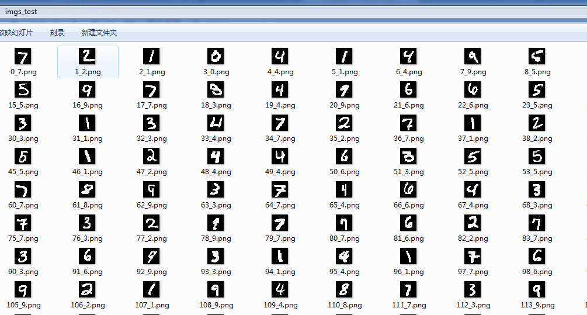

<!DOCTYPE html>
<html lang="zh">
<head><meta name="generator" content="Hexo 3.8.0">
    <meta charset="utf-8">
    
    <title>机器学习_手写数字识别 | FEI&#39;s Blog</title>
    
    
        <meta name="keywords" content="scikit-learn,手写数字识别">
    
    <meta name="viewport" content="width=device-width, initial-scale=1, maximum-scale=1">
    <meta name="description" content="MINIST 数据文件（http://yann.lecun.com/exdb/mnist/）">
<meta name="keywords" content="scikit-learn,手写数字识别">
<meta property="og:type" content="article">
<meta property="og:title" content="机器学习_手写数字识别">
<meta property="og:url" content="http://ff120.github.io/hexoblog/2016/06/20/技术/机器学习/机器学习_手写数字识别/index.html">
<meta property="og:site_name" content="FEI&#39;s Blog">
<meta property="og:description" content="MINIST 数据文件（http://yann.lecun.com/exdb/mnist/）">
<meta property="og:locale" content="zh-Hans">
<meta property="og:image" content="http://ff120.github.io/hexoblog/2016/06/20/技术/机器学习/机器学习_手写数字识别/train_image.png">
<meta property="og:image" content="http://ff120.github.io/hexoblog/2016/06/20/技术/机器学习/机器学习_手写数字识别/test_image.png">
<meta property="og:updated_time" content="2019-03-28T00:54:58.054Z">
<meta name="twitter:card" content="summary">
<meta name="twitter:title" content="机器学习_手写数字识别">
<meta name="twitter:description" content="MINIST 数据文件（http://yann.lecun.com/exdb/mnist/）">
<meta name="twitter:image" content="http://ff120.github.io/hexoblog/2016/06/20/技术/机器学习/机器学习_手写数字识别/train_image.png">
    

    
        <link rel="alternate" href="/atom.xml" title="FEI&#39;s Blog" type="application/atom+xml">
    

    
        <link rel="icon" href="/hexoblog/favicon.ico">
    

    <link rel="stylesheet" href="/hexoblog/libs/font-awesome/css/font-awesome.min.css">
    <link rel="stylesheet" href="/hexoblog/libs/open-sans/styles.css">
    <link rel="stylesheet" href="/hexoblog/libs/source-code-pro/styles.css">

    <link rel="stylesheet" href="/hexoblog/css/style.css">
    <script src="/hexoblog/libs/jquery/2.1.3/jquery.min.js"></script>
    <script src="/hexoblog/libs/jquery/plugins/cookie/1.4.1/jquery.cookie.js"></script>
    
    
        <link rel="stylesheet" href="/hexoblog/libs/lightgallery/css/lightgallery.min.css">
    
    
        <link rel="stylesheet" href="/hexoblog/libs/justified-gallery/justifiedGallery.min.css">
    
    
    
    


    
        <script async src="//busuanzi.ibruce.info/busuanzi/2.3/busuanzi.pure.mini.js"></script>
    
</head>
</html>
<body>
    <div id="container">
        <header id="header">
    <div id="header-main" class="header-inner">
        <div class="outer">
            <a href="/hexoblog/" id="logo">
                <i class="logo"></i>
                <span class="site-title">FEI&#39;s Blog</span>
            </a>
            <nav id="main-nav">
                
                    <a class="main-nav-link" href="/hexoblog/">首页</a>
                
                    <a class="main-nav-link" href="/hexoblog/archives">归档</a>
                
                    <a class="main-nav-link" href="/hexoblog/categories">分类</a>
                
                    <a class="main-nav-link" href="/hexoblog/tags">标签</a>
                
                    <a class="main-nav-link" href="/hexoblog/about">关于</a>
                
            </nav>
            
            <div id="search-form-wrap">

    <form class="search-form">
        <input type="text" class="ins-search-input search-form-input" placeholder="Rechercher">
        <button type="submit" class="search-form-submit"></button>
    </form>
    <div class="ins-search">
    <div class="ins-search-mask"></div>
    <div class="ins-search-container">
        <div class="ins-input-wrapper">
            <input type="text" class="ins-search-input" placeholder="Type something...">
            <span class="ins-close ins-selectable"><i class="fa fa-times-circle"></i></span>
        </div>
        <div class="ins-section-wrapper">
            <div class="ins-section-container"></div>
        </div>
    </div>
</div>
<script>
(function (window) {
    var INSIGHT_CONFIG = {
        TRANSLATION: {
            POSTS: 'Articles',
            PAGES: 'Pages',
            CATEGORIES: 'Catégories',
            TAGS: 'Tags',
            UNTITLED: '(Untitled)',
        },
        ROOT_URL: '/hexoblog/',
        CONTENT_URL: '/hexoblog/content.json',
    };
    window.INSIGHT_CONFIG = INSIGHT_CONFIG;
})(window);
</script>
<script src="/hexoblog/js/insight.js"></script>

</div>
        </div>
    </div>
    <div id="main-nav-mobile" class="header-sub header-inner">
        <table class="menu outer">
            <tr>
                
                    <td><a class="main-nav-link" href="/hexoblog/">首页</a></td>
                
                    <td><a class="main-nav-link" href="/hexoblog/archives">归档</a></td>
                
                    <td><a class="main-nav-link" href="/hexoblog/categories">分类</a></td>
                
                    <td><a class="main-nav-link" href="/hexoblog/tags">标签</a></td>
                
                    <td><a class="main-nav-link" href="/hexoblog/about">关于</a></td>
                
                <td>
                    
    <div class="search-form">
        <input type="text" class="ins-search-input search-form-input" placeholder="Rechercher">
    </div>

                </td>
            </tr>
        </table>
    </div>
</header>

        <div class="outer">
            
            
                <aside id="sidebar">
   
        
    <div class="widget-wrap" id="categories">
        <h3 class="widget-title">
            <span>Catégories</span>
            &nbsp;
            <a id="allExpand" href="#">
                <i class="fa fa-angle-double-down fa-2x"></i>
            </a>
        </h3>
        
        
        
         <ul class="unstyled" id="tree"> 
                    <li class="directory">
                        <a href="#" data-role="directory">
                            <i class="fa fa-folder"></i>
                            &nbsp;
                            心理学
                        </a>
                         <ul class="unstyled" id="tree"> 
                    <li class="directory">
                        <a href="#" data-role="directory">
                            <i class="fa fa-folder"></i>
                            &nbsp;
                            记忆魔法
                        </a>
                         <ul class="unstyled" id="tree">  <li class="file"><a href="/hexoblog/2019/04/03/心理学/记忆魔法/代码记忆法/">代码记忆法</a></li>  </ul> 
                    </li> 
                     </ul> 
                    </li> 
                    
                    <li class="directory open">
                        <a href="#" data-role="directory">
                            <i class="fa fa-folder-open"></i>
                            &nbsp;
                            技术
                        </a>
                         <ul class="unstyled" id="tree"> 
                    <li class="directory">
                        <a href="#" data-role="directory">
                            <i class="fa fa-folder"></i>
                            &nbsp;
                            Web开发
                        </a>
                         <ul class="unstyled" id="tree">  <li class="file"><a href="/hexoblog/2016/06/11/技术/Web开发/后台开发_How-to-install-Laravel-framework/">How to install Laravel framework</a></li>  <li class="file"><a href="/hexoblog/2016/06/11/技术/Web开发/后台开发_laravel-4-note-01/">laravel 4 note 01</a></li>  <li class="file"><a href="/hexoblog/2016/06/11/技术/Web开发/后台开发_Make-phpStorm-friendly-to-laravel/">Make phpStorm friendly to laravel</a></li>  <li class="file"><a href="/hexoblog/2016/06/11/技术/Web开发/后台开发_sublime-Text-tricks/">sublime Text tricks</a></li>  <li class="file"><a href="/hexoblog/2016/06/11/技术/Web开发/后台开发_think-php-note-01/">think php note 01</a></li>  <li class="file"><a href="/hexoblog/2016/06/11/技术/Web开发/后台开发_think-php-note-02/">think php note 02</a></li>  <li class="file"><a href="/hexoblog/2016/06/11/技术/Web开发/后台开发_think-php-note-03/">think php note 03</a></li>  <li class="file"><a href="/hexoblog/2016/06/11/技术/Web开发/后台开发_PHP编译less文件-lessphp的使用/">PHP编译less文件-lessphp的使用</a></li>  <li class="file"><a href="/hexoblog/2016/06/11/技术/Web开发/后台开发_Lavarel-后台组件frozenode的使用/">Lavarel 后台组件frozenode的使用</a></li>  <li class="file"><a href="/hexoblog/2016/06/11/技术/Web开发/后台开发_Linux常用命令/">Linux常用命令</a></li>  <li class="file"><a href="/hexoblog/2016/06/11/技术/Web开发/后台开发_Linux主机之间同步文件/">Linux主机之间同步文件</a></li>  <li class="file"><a href="/hexoblog/2016/06/11/技术/Web开发/后台开发_PHP基本操作/">PHP基本操作</a></li>  <li class="file"><a href="/hexoblog/2016/06/11/技术/Web开发/后台开发_短信验证码的实现/">短信验证码的实现</a></li>  <li class="file"><a href="/hexoblog/2016/06/11/技术/Web开发/后台开发_配置Apache支持使用HTTPS/">配置Apache支持使用HTTPS</a></li>  <li class="file"><a href="/hexoblog/2016/06/11/技术/Web开发/测试_使用Selenium测试UI/">测试_使用Selenium测试UI</a></li>  <li class="file"><a href="/hexoblog/2016/06/11/技术/Web开发/后台开发_PhpStorm常用快捷键/">PhpStorm常用快捷键</a></li>  <li class="file"><a href="/hexoblog/2016/06/11/技术/Web开发/微信开发_微信发送消息PHP-SDK/">微信发送消息PHP SDK</a></li>  <li class="file"><a href="/hexoblog/2016/06/11/技术/Web开发/微信开发_获取地理位置/">微信获取地理位置 </a></li>  <li class="file"><a href="/hexoblog/2016/06/11/技术/Web开发/微信开发_发送模板消息的代码/">微信发送模板消息的代码</a></li>  <li class="file"><a href="/hexoblog/2016/06/11/技术/Web开发/测试_Selenium-定位元素的几种方式/">测试_Selenium定位元素的几种方式</a></li>  <li class="file"><a href="/hexoblog/2016/06/11/技术/Web开发/测试_Selenium-Action/">测试_Selenium Action</a></li>  <li class="file"><a href="/hexoblog/2016/06/11/技术/Web开发/测试_Apache-JMeter的使用/">测试_Apache JMeter的使用</a></li>  <li class="file"><a href="/hexoblog/2016/06/12/技术/Web开发/后台开发_Apache-配置虚拟主机/">Apache 配置虚拟主机</a></li>  <li class="file"><a href="/hexoblog/2016/06/23/技术/Web开发/后台开发_改进PHP的var-dump-方法使之适应显示从数据库中查出来的数据/">改进PHP的var_dump()方法使之适应显示从数据库中查出来的数据</a></li>  <li class="file"><a href="/hexoblog/2016/06/23/技术/Web开发/后台开发_PHP读写XLS/">PHP读写XLS</a></li>  <li class="file"><a href="/hexoblog/2016/06/30/技术/Web开发/前端_jQuery-EasyUI-学习笔记/">JQuery EasyUI 学习笔记</a></li>  <li class="file"><a href="/hexoblog/2016/06/30/技术/Web开发/前端_bootsharp学习笔记/">Bootsharp学习笔记</a></li>  </ul> 
                    </li> 
                    
                    <li class="directory">
                        <a href="#" data-role="directory">
                            <i class="fa fa-folder"></i>
                            &nbsp;
                            专业术语
                        </a>
                         <ul class="unstyled" id="tree">  <li class="file"><a href="/hexoblog/2017/07/24/技术/专业术语/术语/">英语</a></li>  </ul> 
                    </li> 
                    
                    <li class="directory">
                        <a href="#" data-role="directory">
                            <i class="fa fa-folder"></i>
                            &nbsp;
                            大数据
                        </a>
                         <ul class="unstyled" id="tree">  <li class="file"><a href="/hexoblog/2016/06/23/技术/大数据/大数据_Spark环境下的Kmeans-Python实现/">Spark环境下的Kmeans-Python实现</a></li>  <li class="file"><a href="/hexoblog/2017/10/06/技术/大数据/大数据基础框架/">大数据基础框架</a></li>  </ul> 
                    </li> 
                    
                    <li class="directory">
                        <a href="#" data-role="directory">
                            <i class="fa fa-folder"></i>
                            &nbsp;
                            工具
                        </a>
                         <ul class="unstyled" id="tree"> 
                    <li class="directory">
                        <a href="#" data-role="directory">
                            <i class="fa fa-folder"></i>
                            &nbsp;
                            AutoHotKey
                        </a>
                         <ul class="unstyled" id="tree">  <li class="file"><a href="/hexoblog/2018/12/02/技术/工具/AutoHotKey/AutoHotKey非常有用的脚本/">AutoHotKey非常有用的脚本</a></li>  </ul> 
                    </li> 
                    
                    <li class="directory">
                        <a href="#" data-role="directory">
                            <i class="fa fa-folder"></i>
                            &nbsp;
                            Git
                        </a>
                         <ul class="unstyled" id="tree">  <li class="file"><a href="/hexoblog/2017/05/04/技术/工具/Git/GIT的使用01-基本功能/">GIT的使用01-基本功能</a></li>  <li class="file"><a href="/hexoblog/2018/07/29/技术/工具/Git/Git查询手册/">Git 手册</a></li>  </ul> 
                    </li> 
                    
                    <li class="directory">
                        <a href="#" data-role="directory">
                            <i class="fa fa-folder"></i>
                            &nbsp;
                            Hexo
                        </a>
                         <ul class="unstyled" id="tree">  <li class="file"><a href="/hexoblog/2016/06/12/技术/工具/Hexo/Hexo的使用02-同步/">Hexo的使用02-同步</a></li>  <li class="file"><a href="/hexoblog/2016/06/13/技术/工具/Hexo/Hexo的使用01-搭建/">Hexo的使用01-搭建</a></li>  <li class="file"><a href="/hexoblog/2017/04/12/技术/工具/Hexo/Hexo的使用05-Atom编辑器/">Hexo的使用05-Atom编辑器</a></li>  <li class="file"><a href="/hexoblog/2017/04/12/技术/工具/Hexo/Hexo的使用04-数学公式/">Hexo的使用04-数学公式</a></li>  <li class="file"><a href="/hexoblog/2017/05/05/技术/工具/Hexo/Hexo的使用03-迁移/">Hexo的使用03-迁移</a></li>  <li class="file"><a href="/hexoblog/2017/07/17/技术/工具/Hexo/Hexo的使用06-使用gist存储代码片段/">Hexo中使用gist存储代码片段</a></li>  </ul> 
                    </li> 
                    
                    <li class="directory">
                        <a href="#" data-role="directory">
                            <i class="fa fa-folder"></i>
                            &nbsp;
                            Visio
                        </a>
                         <ul class="unstyled" id="tree">  <li class="file"><a href="/hexoblog/2017/05/05/技术/工具/Visio/VISIO的使用01-基础入门/">VISIO的使用01-基础入门</a></li>  </ul> 
                    </li> 
                    
                    <li class="directory">
                        <a href="#" data-role="directory">
                            <i class="fa fa-folder"></i>
                            &nbsp;
                            图片处理
                        </a>
                         <ul class="unstyled" id="tree">  <li class="file"><a href="/hexoblog/2017/05/05/技术/工具/图片处理/图片处理02-一寸照片/">图片处理02-一寸照片</a></li>  <li class="file"><a href="/hexoblog/2017/05/17/技术/工具/图片处理/图片处理01-合并多张图片/">图片处理01-合并多张图片</a></li>  </ul> 
                    </li> 
                    
                    <li class="directory">
                        <a href="#" data-role="directory">
                            <i class="fa fa-folder"></i>
                            &nbsp;
                            正则表达式
                        </a>
                         <ul class="unstyled" id="tree">  <li class="file"><a href="/hexoblog/2018/07/29/技术/工具/正则表达式/正则表达式/">正则表达式</a></li>  </ul> 
                    </li> 
                    
                    <li class="directory">
                        <a href="#" data-role="directory">
                            <i class="fa fa-folder"></i>
                            &nbsp;
                            编程IDE
                        </a>
                         <ul class="unstyled" id="tree"> 
                    <li class="directory">
                        <a href="#" data-role="directory">
                            <i class="fa fa-folder"></i>
                            &nbsp;
                            Anaconda
                        </a>
                         <ul class="unstyled" id="tree">  <li class="file"><a href="/hexoblog/2017/04/18/技术/工具/编程IDE/Anaconda/Anaconda的使用01-基础/">Anaconda的使用01-基础</a></li>  </ul> 
                    </li> 
                    
                    <li class="directory">
                        <a href="#" data-role="directory">
                            <i class="fa fa-folder"></i>
                            &nbsp;
                            JetBrainsCLion
                        </a>
                         <ul class="unstyled" id="tree">  <li class="file"><a href="/hexoblog/2017/05/04/技术/工具/编程IDE/JetBrainsCLion/JetBrainsCLion的使用01-入门/">JetBrainsCLion的使用01-入门</a></li>  </ul> 
                    </li> 
                    
                    <li class="directory">
                        <a href="#" data-role="directory">
                            <i class="fa fa-folder"></i>
                            &nbsp;
                            VSCode
                        </a>
                         <ul class="unstyled" id="tree">  <li class="file"><a href="/hexoblog/2017/07/24/技术/工具/编程IDE/VSCode/Visual-Studio-Code使用技巧/">Visual Studio Code使用技巧</a></li>  </ul> 
                    </li> 
                     </ul> 
                    </li> 
                    
                    <li class="directory">
                        <a href="#" data-role="directory">
                            <i class="fa fa-folder"></i>
                            &nbsp;
                            网络软件
                        </a>
                         <ul class="unstyled" id="tree">  <li class="file"><a href="/hexoblog/2016/06/12/技术/工具/网络软件/Windows全局代理软件Proxifier/">Windows全局代理软件Proxifier</a></li>  <li class="file"><a href="/hexoblog/2016/06/12/技术/工具/网络软件/Windows手工修改路由表/">Windows手工修改路由表</a></li>  </ul> 
                    </li> 
                     </ul> 
                    </li> 
                    
                    <li class="directory">
                        <a href="#" data-role="directory">
                            <i class="fa fa-folder"></i>
                            &nbsp;
                            数据库
                        </a>
                         <ul class="unstyled" id="tree">  <li class="file"><a href="/hexoblog/2016/06/11/技术/数据库/数据库_Redis入门/">Redis入门</a></li>  <li class="file"><a href="/hexoblog/2016/06/12/技术/数据库/数据库_使用Database-Configuration-Assist-工具创建oracle数据库/">使用Database Configuration Assist 工具创建oracle数据库</a></li>  <li class="file"><a href="/hexoblog/2017/11/02/技术/数据库/SQL/">SQL</a></li>  </ul> 
                    </li> 
                    
                    <li class="directory">
                        <a href="#" data-role="directory">
                            <i class="fa fa-folder"></i>
                            &nbsp;
                            数据结构和算法
                        </a>
                         <ul class="unstyled" id="tree">  <li class="file"><a href="/hexoblog/2017/03/21/技术/数据结构和算法/算法专题_二维数组/">算法专题_二维数组</a></li>  <li class="file"><a href="/hexoblog/2017/03/21/技术/数据结构和算法/算法专题_矩阵和图/">矩阵和用矩阵表示的图的相关问题</a></li>  <li class="file"><a href="/hexoblog/2017/03/21/技术/数据结构和算法/算法专题_位运算/">算法专题_位运算</a></li>  <li class="file"><a href="/hexoblog/2017/03/23/技术/数据结构和算法/算法专题_链表/">算法专题_链表</a></li>  <li class="file"><a href="/hexoblog/2017/04/05/技术/数据结构和算法/算法专题_动态规划/">算法专题_动态规划</a></li>  <li class="file"><a href="/hexoblog/2017/04/06/技术/数据结构和算法/算法专题_图/">算法专题_图问题</a></li>  <li class="file"><a href="/hexoblog/2017/04/08/技术/数据结构和算法/做过的算法题汇总表/">做过的算法题汇总表</a></li>  <li class="file"><a href="/hexoblog/2017/04/09/技术/数据结构和算法/算法专题_二叉树/">算法专题_二叉树</a></li>  <li class="file"><a href="/hexoblog/2017/04/09/技术/数据结构和算法/算法专题_通用树结构/">算法专题_通用树结构</a></li>  <li class="file"><a href="/hexoblog/2017/04/10/技术/数据结构和算法/算法专题_大数据和空间限制/">算法专题_大数据和空间限制</a></li>  <li class="file"><a href="/hexoblog/2017/04/10/技术/数据结构和算法/算法专题_排列组合/">算法专题_排列组合</a></li>  <li class="file"><a href="/hexoblog/2017/04/11/技术/数据结构和算法/本地代码集锦/">本地代码集锦</a></li>  <li class="file"><a href="/hexoblog/2017/04/12/技术/数据结构和算法/算法专题_栈和队列/">算法专题_栈和队列</a></li>  <li class="file"><a href="/hexoblog/2017/04/16/技术/数据结构和算法/算法专题_排序算法/">算法专题_排序算法</a></li>  <li class="file"><a href="/hexoblog/2017/04/17/技术/数据结构和算法/算法专题_算法总结/">算法专题_算法总结</a></li>  <li class="file"><a href="/hexoblog/2017/05/02/技术/数据结构和算法/算法专题_一维数组/">算法专题_一维数组</a></li>  <li class="file"><a href="/hexoblog/2017/05/05/技术/数据结构和算法/算法专题_图之网络流/">算法专题_图之网络流</a></li>  <li class="file"><a href="/hexoblog/2017/05/06/技术/数据结构和算法/算法专题_图之最短路径/">算法专题_图之最短路径</a></li>  <li class="file"><a href="/hexoblog/2017/05/06/技术/数据结构和算法/算法专题_最小生成树/">算法专题_最小生成树</a></li>  <li class="file"><a href="/hexoblog/2017/05/06/技术/数据结构和算法/算法专题_霍夫曼编码/">算法专题_霍夫曼编码(哈夫曼编码)</a></li>  <li class="file"><a href="/hexoblog/2017/05/07/技术/数据结构和算法/Kickstart-Round-B-2017/">Kickstart Round B 2017</a></li>  <li class="file"><a href="/hexoblog/2017/05/08/技术/数据结构和算法/算法专题_模运算/">算法专题_模运算</a></li>  <li class="file"><a href="/hexoblog/2017/05/09/技术/数据结构和算法/算法专题_素数问题/">算法专题_素数问题</a></li>  <li class="file"><a href="/hexoblog/2017/05/11/技术/数据结构和算法/算法专题_计算几何/">算法专题_计算几何</a></li>  <li class="file"><a href="/hexoblog/2017/05/27/技术/数据结构和算法/计蒜之道2017程序设计大赛/">计蒜之道2017程序设计大赛</a></li>  <li class="file"><a href="/hexoblog/2017/05/28/技术/数据结构和算法/算法专题_字符串匹配/">算法专题_字符串匹配</a></li>  <li class="file"><a href="/hexoblog/2017/07/12/技术/数据结构和算法/四等分数组/">四等分数组</a></li>  <li class="file"><a href="/hexoblog/2017/07/12/技术/数据结构和算法/矩阵的遍历/">矩阵的遍历</a></li>  <li class="file"><a href="/hexoblog/2017/07/20/技术/数据结构和算法/N皇后问题/">N皇后问题</a></li>  <li class="file"><a href="/hexoblog/2017/07/23/技术/数据结构和算法/算法专题_线段树/">算法专题_线段树</a></li>  <li class="file"><a href="/hexoblog/2017/07/23/技术/数据结构和算法/算法专题_树状数组/">算法专题_树状数组</a></li>  <li class="file"><a href="/hexoblog/2017/07/23/技术/数据结构和算法/算法专题_并查集/">算法专题_并查集</a></li>  <li class="file"><a href="/hexoblog/2017/07/26/技术/数据结构和算法/算法专题_链表2/">算法专题_链表2</a></li>  <li class="file"><a href="/hexoblog/2017/08/06/技术/数据结构和算法/算法专题_二叉堆/">算法专题_二叉堆</a></li>  <li class="file"><a href="/hexoblog/2017/08/07/技术/数据结构和算法/算法专题_快速排序/">算法专题_快速排序</a></li>  <li class="file"><a href="/hexoblog/2017/08/07/技术/数据结构和算法/算法专题_归并排序/">算法专题_归并排序</a></li>  <li class="file"><a href="/hexoblog/2017/08/13/技术/数据结构和算法/算法专题-hihocoder/">算法专题_hihocoder</a></li>  <li class="file"><a href="/hexoblog/2017/08/17/技术/数据结构和算法/算法专题-贪心法/">算法专题_贪心法</a></li>  <li class="file"><a href="/hexoblog/2017/08/18/技术/数据结构和算法/阿里在线测评-兔子繁殖问题/">阿里笔试</a></li>  <li class="file"><a href="/hexoblog/2017/08/22/技术/数据结构和算法/今日头条-在线编程题/">今日头条_在线编程题</a></li>  <li class="file"><a href="/hexoblog/2017/08/23/技术/数据结构和算法/算法专题-字典树-Trie树/">算法专题_字典树(Trie树)</a></li>  <li class="file"><a href="/hexoblog/2017/09/23/技术/数据结构和算法/算法专题_二叉树2/">算法专题_二叉树2</a></li>  <li class="file"><a href="/hexoblog/2017/09/27/技术/数据结构和算法/手写代码-其他/">手写代码-其他</a></li>  <li class="file"><a href="/hexoblog/2017/10/03/技术/数据结构和算法/算法专题-常见题目/">算法专题_常见题目</a></li>  </ul> 
                    </li> 
                    
                    <li class="directory open">
                        <a href="#" data-role="directory">
                            <i class="fa fa-folder-open"></i>
                            &nbsp;
                            机器学习
                        </a>
                         <ul class="unstyled" id="tree"> 
                    <li class="directory">
                        <a href="#" data-role="directory">
                            <i class="fa fa-folder"></i>
                            &nbsp;
                            深度学习
                        </a>
                         <ul class="unstyled" id="tree">  <li class="file"><a href="/hexoblog/2017/03/22/技术/机器学习/深度学习/深度学习_Theano使用技巧/">深度学习_Theano使用技巧</a></li>  <li class="file"><a href="/hexoblog/2017/04/18/技术/机器学习/深度学习/深度学习_基本概念/">深度学习_基本概念</a></li>  <li class="file"><a href="/hexoblog/2017/04/18/技术/机器学习/深度学习/深度学习_利用神经网络识别手写数字/">深度学习__利用神经网络识别手写数字</a></li>  <li class="file"><a href="/hexoblog/2017/04/19/技术/机器学习/深度学习/深度学习_反向传播算法及简单实例/">深度学习_反向传播算法及简单实例</a></li>  <li class="file"><a href="/hexoblog/2017/04/19/技术/机器学习/深度学习/深度学习_Keras使用技巧/">深度学习_Keras使用技巧</a></li>  <li class="file"><a href="/hexoblog/2017/04/20/技术/机器学习/深度学习/深度学习_使用keras实现autoencoder/">深度学习_使用keras实现autoencoder</a></li>  <li class="file"><a href="/hexoblog/2017/04/20/技术/机器学习/深度学习/深度学习_卷积神经网络/">深度学习_卷积神经网络</a></li>  <li class="file"><a href="/hexoblog/2017/04/27/技术/机器学习/深度学习/深度学习_使用autoencoder自动提取特征/">深度学习_使用autoencoder自动提取特征</a></li>  <li class="file"><a href="/hexoblog/2017/05/10/技术/机器学习/深度学习/深度学习_递归神经网络(RNN)/">深度学习_递归神经网络(RNN)</a></li>  <li class="file"><a href="/hexoblog/2017/05/10/技术/机器学习/深度学习/深度学习_限制波尔茨曼向量机(RBM)/">深度学习_限制波尔茨曼向量机(RBM)</a></li>  <li class="file"><a href="/hexoblog/2017/05/12/技术/机器学习/深度学习/深度学习_TensorFlow使用技巧/">深度学习_TensorFlow使用技巧</a></li>  </ul> 
                    </li> 
                     <li class="file"><a href="/hexoblog/2016/06/16/技术/机器学习/机器学习_Scikit-Learn-ManyClassifier/">同时使用多个分类器(Scikit-Learn)</a></li>  <li class="file"><a href="/hexoblog/2016/06/16/技术/机器学习/机器学习_范数/">机器学习_范数</a></li>  <li class="file"><a href="/hexoblog/2016/06/20/技术/机器学习/机器学习_学习路线/">机器学习_学习路线</a></li>  <li class="file active"><a href="/hexoblog/2016/06/20/技术/机器学习/机器学习_手写数字识别/">机器学习_手写数字识别</a></li>  <li class="file"><a href="/hexoblog/2016/07/11/技术/机器学习/机器学习_Matplolib使用技巧/">机器学习_Matplolib使用技巧</a></li>  <li class="file"><a href="/hexoblog/2017/03/22/技术/机器学习/机器学习_人脸识别/">机器学习_人脸识别</a></li>  <li class="file"><a href="/hexoblog/2017/05/04/技术/机器学习/机器学习_Matlab使用技巧/">机器学习_Matlab使用技巧</a></li>  <li class="file"><a href="/hexoblog/2017/05/11/技术/机器学习/机器学习_时间序列预测分析算法/">机器学习_时间序列预测分析算法</a></li>  <li class="file"><a href="/hexoblog/2017/05/14/技术/机器学习/机器学习_Scikit-Learn使用技巧/">深度学习_Scikit-Learn机器学习算法的使用</a></li>  <li class="file"><a href="/hexoblog/2017/05/15/技术/机器学习/机器学习_时间序列预测の广告效果预测/">机器学习_时间序列预测の广告效果预测</a></li>  <li class="file"><a href="/hexoblog/2017/05/15/技术/机器学习/机器学习_算法汇总/">机器学习_算法汇总</a></li>  <li class="file"><a href="/hexoblog/2017/05/17/技术/机器学习/机器学习_Pandas使用技巧/">深度学习_Pandas使用技巧</a></li>  <li class="file"><a href="/hexoblog/2017/05/19/技术/机器学习/机器学习_感知机/">机器学习_感知机</a></li>  <li class="file"><a href="/hexoblog/2017/05/19/技术/机器学习/机器学习_逻辑回归/">机器学习_逻辑回归</a></li>  <li class="file"><a href="/hexoblog/2017/05/22/技术/机器学习/机器学习_损失函数/">机器学习_损失函数</a></li>  <li class="file"><a href="/hexoblog/2017/06/03/技术/机器学习/机器学习_分类器性能的度量/">机器学习_分类器性能的度量</a></li>  <li class="file"><a href="/hexoblog/2017/06/15/技术/机器学习/机器学习_Scipy使用技巧/">机器学习_Scipy使用技巧</a></li>  <li class="file"><a href="/hexoblog/2017/06/15/技术/机器学习/机器学习_Python使用技巧/">深度学习_Python使用技巧</a></li>  <li class="file"><a href="/hexoblog/2017/07/23/技术/机器学习/机器学习-Numpy使用技巧/">机器学习_Numpy使用技巧</a></li>  <li class="file"><a href="/hexoblog/2017/10/15/技术/机器学习/KNN-with-C/">KNN with C++</a></li>  <li class="file"><a href="/hexoblog/2017/11/04/技术/机器学习/机器学习-绪论-基本概念/">机器学习-绪论-基本概念</a></li>  <li class="file"><a href="/hexoblog/2017/11/04/技术/机器学习/机器学习-第一章-逻辑回归/">机器学习-第一章-逻辑回归</a></li>  <li class="file"><a href="/hexoblog/2017/11/04/技术/机器学习/机器学习-第二章-决策树/">机器学习-第二章-决策树</a></li>  <li class="file"><a href="/hexoblog/2017/11/04/技术/机器学习/机器学习-第三章-朴素贝叶斯/">机器学习-第三章-朴素贝叶斯</a></li>  <li class="file"><a href="/hexoblog/2017/11/04/技术/机器学习/机器学习-第四章-支持向量机/">机器学习-第四章-支持向量机</a></li>  <li class="file"><a href="/hexoblog/2017/11/04/技术/机器学习/机器学习-第五章-最近邻/">机器学习-第五章-最近邻</a></li>  <li class="file"><a href="/hexoblog/2017/11/04/技术/机器学习/机器学习-第六章-kmeans/">机器学习-第六章-kmeans</a></li>  <li class="file"><a href="/hexoblog/2017/11/04/技术/机器学习/机器学习-第七章-感知机/">机器学习-第七章-感知机</a></li>  </ul> 
                    </li> 
                    
                    <li class="directory">
                        <a href="#" data-role="directory">
                            <i class="fa fa-folder"></i>
                            &nbsp;
                            编程语言
                        </a>
                         <ul class="unstyled" id="tree"> 
                    <li class="directory">
                        <a href="#" data-role="directory">
                            <i class="fa fa-folder"></i>
                            &nbsp;
                            C++
                        </a>
                         <ul class="unstyled" id="tree">  <li class="file"><a href="/hexoblog/2017/04/07/技术/编程语言/C++/C++语言技巧/">C++语言技巧</a></li>  </ul> 
                    </li> 
                     </ul> 
                    </li> 
                    
                    <li class="directory">
                        <a href="#" data-role="directory">
                            <i class="fa fa-folder"></i>
                            &nbsp;
                            计算机基础
                        </a>
                         <ul class="unstyled" id="tree"> 
                    <li class="directory">
                        <a href="#" data-role="directory">
                            <i class="fa fa-folder"></i>
                            &nbsp;
                            计算机网络
                        </a>
                         <ul class="unstyled" id="tree">  <li class="file"><a href="/hexoblog/2016/06/12/技术/计算机基础/计算机网络/网络_校园网多终端上网方案/">校园网多终端上网方案</a></li>  <li class="file"><a href="/hexoblog/2017/07/12/技术/计算机基础/计算机网络/计算机网络/">计算机网络</a></li>  </ul> 
                    </li> 
                     </ul> 
                    </li> 
                    
                    <li class="directory">
                        <a href="#" data-role="directory">
                            <i class="fa fa-folder"></i>
                            &nbsp;
                            认知神经科学
                        </a>
                         <ul class="unstyled" id="tree">  <li class="file"><a href="/hexoblog/2016/06/12/技术/认知神经科学/文献检索方法/">文献检索方法</a></li>  <li class="file"><a href="/hexoblog/2016/06/12/技术/认知神经科学/参考文献书写格式/">参考文献书写格式</a></li>  <li class="file"><a href="/hexoblog/2016/06/12/技术/认知神经科学/使用Python处理fMRI数据/">使用Python处理fMRI数据</a></li>  <li class="file"><a href="/hexoblog/2016/06/22/技术/认知神经科学/中英文对照/">中英文对照</a></li>  <li class="file"><a href="/hexoblog/2017/01/03/技术/认知神经科学/circos入门教程/">circos入门教程</a></li>  <li class="file"><a href="/hexoblog/2017/03/08/技术/认知神经科学/基于视频的车牌识别和流量统计/">基于视频的车牌识别和流量统计</a></li>  <li class="file"><a href="/hexoblog/2017/03/08/技术/认知神经科学/基于贝叶斯网络和隐性知识的AU识别研究/">基于贝叶斯网络和隐性知识的AU识别研究</a></li>  <li class="file"><a href="/hexoblog/2017/03/09/技术/认知神经科学/基于连接的脑信息解码研究/">基于连接信息的脑信息解码研究</a></li>  <li class="file"><a href="/hexoblog/2017/03/09/技术/认知神经科学/认知神经科学系列目录/">认知神经科学系列目录</a></li>  <li class="file"><a href="/hexoblog/2017/03/20/技术/认知神经科学/多被试多RUN批量预处理(SPM)/">多被试多RUN批量预处理(SPM)</a></li>  <li class="file"><a href="/hexoblog/2017/03/20/技术/认知神经科学/SPM预处理中的常用操作/">SPM预处理中的常用操作</a></li>  <li class="file"><a href="/hexoblog/2017/03/20/技术/认知神经科学/动态因果模型(DCM)的批量定义和估计/">动态因果模型(DCM)的批量定义和估计</a></li>  <li class="file"><a href="/hexoblog/2017/04/13/技术/认知神经科学/使用SPM做Second-Level分析/">使用SPM做Second_Level分析</a></li>  <li class="file"><a href="/hexoblog/2017/04/13/技术/认知神经科学/DCM模型的定义和估计/">DCM模型的定义和估计</a></li>  <li class="file"><a href="/hexoblog/2017/04/14/技术/认知神经科学/XJVIEW的使用技巧/">XJVIEW的使用技巧</a></li>  <li class="file"><a href="/hexoblog/2017/04/14/技术/认知神经科学/SPM中函数的修改和使用/">SPM中函数的修改和使用</a></li>  <li class="file"><a href="/hexoblog/2017/05/02/技术/认知神经科学/fMRI中常用的工具包/">fMRI中常用的工具包</a></li>  <li class="file"><a href="/hexoblog/2017/05/11/技术/认知神经科学/使用3D卷积神经神经网络提取脑成像数据的特征/">使用3D卷积神经神经网络提取脑成像数据的特征</a></li>  <li class="file"><a href="/hexoblog/2017/05/14/技术/认知神经科学/fMRI相关的资源汇总/">fMRI相关的资源汇总</a></li>  <li class="file"><a href="/hexoblog/2017/05/30/技术/认知神经科学/fMRI相关问题汇总/">fMRI相关问题汇总</a></li>  </ul> 
                    </li> 
                     </ul> 
                    </li> 
                    
                    <li class="directory">
                        <a href="#" data-role="directory">
                            <i class="fa fa-folder"></i>
                            &nbsp;
                            收藏夹
                        </a>
                         <ul class="unstyled" id="tree">  <li class="file"><a href="/hexoblog/2017/03/22/收藏夹/博客集锦/">博客收藏</a></li>  </ul> 
                    </li> 
                     </ul> 
    </div>
    <script>
        $(document).ready(function() {
            var iconFolderOpenClass  = 'fa-folder-open';
            var iconFolderCloseClass = 'fa-folder';
            var iconAllExpandClass = 'fa-angle-double-down';
            var iconAllPackClass = 'fa-angle-double-up';
            // Handle directory-tree expansion:
            // 左键单独展开目录
            $(document).on('click', '#categories a[data-role="directory"]', function (event) {
                event.preventDefault();

                var icon = $(this).children('.fa');
                var expanded = icon.hasClass(iconFolderOpenClass);
                var subtree = $(this).siblings('ul');
                icon.removeClass(iconFolderOpenClass).removeClass(iconFolderCloseClass);
                if (expanded) {
                    if (typeof subtree != 'undefined') {
                        subtree.slideUp({ duration: 100 });
                    }
                    icon.addClass(iconFolderCloseClass);
                } else {
                    if (typeof subtree != 'undefined') {
                        subtree.slideDown({ duration: 100 });
                    }
                    icon.addClass(iconFolderOpenClass);
                }
            });
            // 右键展开下属所有目录
            $('#categories a[data-role="directory"]').bind("contextmenu", function(event){
                event.preventDefault();
                
                var icon = $(this).children('.fa');
                var expanded = icon.hasClass(iconFolderOpenClass);
                var listNode = $(this).siblings('ul');
                var subtrees = $.merge(listNode.find('li ul'), listNode);
                var icons = $.merge(listNode.find('.fa'), icon);
                icons.removeClass(iconFolderOpenClass).removeClass(iconFolderCloseClass);
                if(expanded) {
                    subtrees.slideUp({ duration: 100 });
                    icons.addClass(iconFolderCloseClass);
                } else {
                    subtrees.slideDown({ duration: 100 });
                    icons.addClass(iconFolderOpenClass);
                }
            })
            // 展开关闭所有目录按钮
            $(document).on('click', '#allExpand', function (event) {
                event.preventDefault();
                
                var icon = $(this).children('.fa');
                var expanded = icon.hasClass(iconAllExpandClass);
                icon.removeClass(iconAllExpandClass).removeClass(iconAllPackClass);
                if(expanded) {
                    $('#sidebar .fa.fa-folder').removeClass('fa-folder').addClass('fa-folder-open')
                    $('#categories li ul').slideDown({ duration: 100 });
                    icon.addClass(iconAllPackClass);
                } else {
                    $('#sidebar .fa.fa-folder-open').removeClass('fa-folder-open').addClass('fa-folder')
                    $('#categories li ul').slideUp({ duration: 100 });
                    icon.addClass(iconAllExpandClass);
                }
            });  
        });
    </script>

    
    <div id="toTop" class="fa fa-angle-up"></div>
</aside>
            
            <section id="main"><article id="post-技术/机器学习/机器学习_手写数字识别" class="article article-type-post" itemscope="" itemprop="blogPost">
    <div class="article-inner">
        
        
            <header class="article-header">
                
                    <div class="article-meta">
                        
    <div class="article-category">
    	<i class="fa fa-folder"></i>
        <a class="article-category-link" href="/hexoblog/categories/技术/">技术</a><i class="fa fa-angle-right"></i><a class="article-category-link" href="/hexoblog/categories/技术/机器学习/">机器学习</a>
    </div>

                        
    <div class="article-tag">
        <i class="fa fa-tag"></i>
        <a class="tag-link" href="/hexoblog/tags/scikit-learn/">scikit-learn</a>, <a class="tag-link" href="/hexoblog/tags/手写数字识别/">手写数字识别</a>
    </div>

                        
    <div class="article-date">
        <i class="fa fa-calendar"></i>
        <a href="/hexoblog/2016/06/20/技术/机器学习/机器学习_手写数字识别/">
            <time datetime="2016-06-20T11:49:11.000Z" itemprop="datePublished">2016-06-20</time>
        </a>
    </div>


                        
                            <i class="fa fa-bar-chart"></i>
                            <span id="busuanzi_container_site_pv"><span id="busuanzi_value_page_pv"></span></span>    
                        
                        
                            <div class="article-meta-button">
                                <a href="https://github.com/FF120/hexoblog/raw/master/source/_posts/技术/机器学习/机器学习_手写数字识别.md"> Source </a>
                            </div>
                            <div class="article-meta-button">
                                <a href="https://github.com/FF120/hexoblog/edit/master/source/_posts/技术/机器学习/机器学习_手写数字识别.md"> Edit </a>
                            </div>
                            <div class="article-meta-button">
                                <a href="https://github.com/FF120/hexoblog/commits/master/source/_posts/技术/机器学习/机器学习_手写数字识别.md"> History </a>
                            </div>
                        
                    </div>
                
                
    
        <h1 class="article-title" itemprop="name">
            机器学习_手写数字识别
        </h1>
    

            </header>
        
        
        <div class="article-entry" itemprop="articleBody">
        
        
            
                <div id="toc" class="toc-article">
                <strong class="toc-title">Catalogue</strong>
                    <ol class="toc"><li class="toc-item toc-level-1"><a class="toc-link" href="#读取数据保存成图片"><span class="toc-number">1.</span> <span class="toc-text">读取数据保存成图片</span></a></li><li class="toc-item toc-level-1"><a class="toc-link" href="#加载数据"><span class="toc-number">2.</span> <span class="toc-text">加载数据</span></a></li></ol>
                </div>
            
        
        
            <p>MINIST 数据文件（http://yann.lecun.com/exdb/mnist/） <a id="more"></a> 数据读取参考教程（http://blog.csdn.net/dream_angel_z/article/details/50739817）</p>
<h1 id="读取数据保存成图片">读取数据保存成图片</h1>
<p>读取MINIST原始数据格式的工具函数，来源：http://blog.csdn.net/dream_angel_z/article/details/50739817 <figure class="highlight python"><table><tr><td class="gutter"><pre><span class="line">1</span><br><span class="line">2</span><br><span class="line">3</span><br><span class="line">4</span><br><span class="line">5</span><br><span class="line">6</span><br><span class="line">7</span><br><span class="line">8</span><br><span class="line">9</span><br><span class="line">10</span><br><span class="line">11</span><br><span class="line">12</span><br><span class="line">13</span><br><span class="line">14</span><br><span class="line">15</span><br><span class="line">16</span><br><span class="line">17</span><br><span class="line">18</span><br><span class="line">19</span><br><span class="line">20</span><br><span class="line">21</span><br><span class="line">22</span><br><span class="line">23</span><br><span class="line">24</span><br><span class="line">25</span><br><span class="line">26</span><br><span class="line">27</span><br><span class="line">28</span><br><span class="line">29</span><br><span class="line">30</span><br><span class="line">31</span><br><span class="line">32</span><br><span class="line">33</span><br><span class="line">34</span><br><span class="line">35</span><br><span class="line">36</span><br><span class="line">37</span><br><span class="line">38</span><br><span class="line">39</span><br><span class="line">40</span><br><span class="line">41</span><br><span class="line">42</span><br><span class="line">43</span><br><span class="line">44</span><br><span class="line">45</span><br><span class="line">46</span><br><span class="line">47</span><br><span class="line">48</span><br><span class="line">49</span><br><span class="line">50</span><br><span class="line">51</span><br><span class="line">52</span><br><span class="line">53</span><br><span class="line">54</span><br><span class="line">55</span><br><span class="line">56</span><br><span class="line">57</span><br><span class="line">58</span><br><span class="line">59</span><br><span class="line">60</span><br><span class="line">61</span><br><span class="line">62</span><br><span class="line">63</span><br><span class="line">64</span><br><span class="line">65</span><br><span class="line">66</span><br><span class="line">67</span><br><span class="line">68</span><br><span class="line">69</span><br><span class="line">70</span><br><span class="line">71</span><br><span class="line">72</span><br><span class="line">73</span><br><span class="line">74</span><br><span class="line">75</span><br><span class="line">76</span><br><span class="line">77</span><br><span class="line">78</span><br><span class="line">79</span><br><span class="line">80</span><br><span class="line">81</span><br><span class="line">82</span><br><span class="line">83</span><br><span class="line">84</span><br><span class="line">85</span><br><span class="line">86</span><br><span class="line">87</span><br><span class="line">88</span><br><span class="line">89</span><br><span class="line">90</span><br><span class="line">91</span><br><span class="line">92</span><br><span class="line">93</span><br><span class="line">94</span><br><span class="line">95</span><br><span class="line">96</span><br><span class="line">97</span><br><span class="line">98</span><br><span class="line">99</span><br><span class="line">100</span><br><span class="line">101</span><br><span class="line">102</span><br><span class="line">103</span><br><span class="line">104</span><br><span class="line">105</span><br><span class="line">106</span><br><span class="line">107</span><br><span class="line">108</span><br><span class="line">109</span><br><span class="line">110</span><br><span class="line">111</span><br><span class="line">112</span><br></pre></td><td class="code"><pre><span class="line"><span class="comment"># -*- coding: utf-8 -*-</span></span><br><span class="line"></span><br><span class="line"><span class="string">"""</span></span><br><span class="line"><span class="string">Created on Thu Feb 25 14:40:06 2016</span></span><br><span class="line"><span class="string">load MNIST dataset</span></span><br><span class="line"><span class="string">@author: liudiwei</span></span><br><span class="line"><span class="string">"""</span></span><br><span class="line"><span class="keyword">import</span> numpy <span class="keyword">as</span> np</span><br><span class="line"><span class="keyword">import</span> struct</span><br><span class="line"><span class="keyword">import</span> matplotlib.pyplot <span class="keyword">as</span> plt</span><br><span class="line"><span class="keyword">import</span> os</span><br><span class="line"></span><br><span class="line"><span class="class"><span class="keyword">class</span> <span class="title">DataUtils</span><span class="params">(object)</span>:</span></span><br><span class="line">    <span class="string">"""</span></span><br><span class="line"><span class="string"></span></span><br><span class="line"><span class="string">    MNIST数据集加载</span></span><br><span class="line"><span class="string">    输出格式为：numpy.array()</span></span><br><span class="line"><span class="string"></span></span><br><span class="line"><span class="string">    使用方法如下</span></span><br><span class="line"><span class="string">    from data_util import DataUtils</span></span><br><span class="line"><span class="string">    def main():</span></span><br><span class="line"><span class="string">        trainfile_X = '../dataset/MNIST/train-images.idx3-ubyte'</span></span><br><span class="line"><span class="string">        trainfile_y = '../dataset/MNIST/train-labels.idx1-ubyte'</span></span><br><span class="line"><span class="string">        testfile_X = '../dataset/MNIST/t10k-images.idx3-ubyte'</span></span><br><span class="line"><span class="string">        testfile_y = '../dataset/MNIST/t10k-labels.idx1-ubyte'</span></span><br><span class="line"><span class="string"></span></span><br><span class="line"><span class="string">        train_X = DataUtils(filename=trainfile_X).getImage()</span></span><br><span class="line"><span class="string">        train_y = DataUtils(filename=trainfile_y).getLabel()</span></span><br><span class="line"><span class="string">        test_X = DataUtils(testfile_X).getImage()</span></span><br><span class="line"><span class="string">        test_y = DataUtils(testfile_y).getLabel()</span></span><br><span class="line"><span class="string"></span></span><br><span class="line"><span class="string">        #以下内容是将图像保存到本地文件中</span></span><br><span class="line"><span class="string">        #path_trainset = "../dataset/MNIST/imgs_train"</span></span><br><span class="line"><span class="string">        #path_testset = "../dataset/MNIST/imgs_test"</span></span><br><span class="line"><span class="string">        #if not os.path.exists(path_trainset):</span></span><br><span class="line"><span class="string">        #    os.mkdir(path_trainset)</span></span><br><span class="line"><span class="string">        #if not os.path.exists(path_testset):</span></span><br><span class="line"><span class="string">        #    os.mkdir(path_testset)</span></span><br><span class="line"><span class="string">        #DataUtils(outpath=path_trainset).outImg(train_X, train_y)</span></span><br><span class="line"><span class="string">        #DataUtils(outpath=path_testset).outImg(test_X, test_y)</span></span><br><span class="line"><span class="string"></span></span><br><span class="line"><span class="string">        return train_X, train_y, test_X, test_y</span></span><br><span class="line"><span class="string">    """</span></span><br><span class="line"></span><br><span class="line"></span><br><span class="line">    <span class="function"><span class="keyword">def</span> <span class="title">__init__</span><span class="params">(self, filename=None, outpath=None)</span>:</span></span><br><span class="line">        self._filename = filename</span><br><span class="line">        self._outpath = outpath</span><br><span class="line"></span><br><span class="line">        self._tag = <span class="string">'&gt;'</span></span><br><span class="line">        self._twoBytes = <span class="string">'II'</span></span><br><span class="line">        self._fourBytes = <span class="string">'IIII'</span></span><br><span class="line">        self._pictureBytes = <span class="string">'784B'</span></span><br><span class="line">        self._labelByte = <span class="string">'1B'</span></span><br><span class="line">        self._twoBytes2 = self._tag + self._twoBytes</span><br><span class="line">        self._fourBytes2 = self._tag + self._fourBytes</span><br><span class="line">        self._pictureBytes2 = self._tag + self._pictureBytes</span><br><span class="line">        self._labelByte2 = self._tag + self._labelByte</span><br><span class="line"></span><br><span class="line">    <span class="function"><span class="keyword">def</span> <span class="title">getImage</span><span class="params">(self)</span>:</span></span><br><span class="line">        <span class="string">"""</span></span><br><span class="line"><span class="string">        将MNIST的二进制文件转换成像素特征数据</span></span><br><span class="line"><span class="string">        """</span></span><br><span class="line">        binfile = open(self._filename, <span class="string">'rb'</span>) <span class="comment">#以二进制方式打开文件</span></span><br><span class="line">        buf = binfile.read()</span><br><span class="line">        binfile.close()</span><br><span class="line">        index = <span class="number">0</span></span><br><span class="line">        numMagic,numImgs,numRows,numCols=struct.unpack_from(self._fourBytes2,\</span><br><span class="line">                                                                    buf,\</span><br><span class="line">                                                                    index)</span><br><span class="line">        index += struct.calcsize(self._fourBytes)</span><br><span class="line">        images = []</span><br><span class="line">        <span class="keyword">for</span> i <span class="keyword">in</span> range(numImgs):</span><br><span class="line">            imgVal = struct.unpack_from(self._pictureBytes2, buf, index)</span><br><span class="line">            index += struct.calcsize(self._pictureBytes2)</span><br><span class="line">            imgVal = list(imgVal)</span><br><span class="line">            <span class="keyword">for</span> j <span class="keyword">in</span> range(len(imgVal)):</span><br><span class="line">                <span class="keyword">if</span> imgVal[j] &gt; <span class="number">1</span>:</span><br><span class="line">                    imgVal[j] = <span class="number">1</span></span><br><span class="line">            images.append(imgVal)</span><br><span class="line">        <span class="keyword">return</span> np.array(images)</span><br><span class="line"></span><br><span class="line">    <span class="function"><span class="keyword">def</span> <span class="title">getLabel</span><span class="params">(self)</span>:</span></span><br><span class="line">        <span class="string">"""</span></span><br><span class="line"><span class="string">        将MNIST中label二进制文件转换成对应的label数字特征</span></span><br><span class="line"><span class="string">        """</span></span><br><span class="line">        binFile = open(self._filename,<span class="string">'rb'</span>)</span><br><span class="line">        buf = binFile.read()</span><br><span class="line">        binFile.close()</span><br><span class="line">        index = <span class="number">0</span></span><br><span class="line">        magic, numItems= struct.unpack_from(self._twoBytes2, buf,index)</span><br><span class="line">        index += struct.calcsize(self._twoBytes2)</span><br><span class="line">        labels = [];</span><br><span class="line">        <span class="keyword">for</span> x <span class="keyword">in</span> range(numItems):</span><br><span class="line">            im = struct.unpack_from(self._labelByte2,buf,index)</span><br><span class="line">            index += struct.calcsize(self._labelByte2)</span><br><span class="line">            labels.append(im[<span class="number">0</span>])</span><br><span class="line">        <span class="keyword">return</span> np.array(labels)</span><br><span class="line"></span><br><span class="line">    <span class="function"><span class="keyword">def</span> <span class="title">outImg</span><span class="params">(self, arrX, arrY)</span>:</span></span><br><span class="line">        <span class="string">"""</span></span><br><span class="line"><span class="string">        根据生成的特征和数字标号，输出png的图像</span></span><br><span class="line"><span class="string">        """</span></span><br><span class="line">        m, n = np.shape(arrX)</span><br><span class="line">        <span class="comment">#每张图是28*28=784Byte</span></span><br><span class="line">        <span class="keyword">for</span> i <span class="keyword">in</span> range(m):</span><br><span class="line">            img = np.array(arrX[i])</span><br><span class="line">            img = img.reshape(<span class="number">28</span>,<span class="number">28</span>)</span><br><span class="line">            outfile = str(i) + <span class="string">"_"</span> +  str(arrY[i]) + <span class="string">".png"</span></span><br><span class="line">            <span class="comment">#plt.imshow(img, cmap = 'binary') #将图像黑白显示</span></span><br><span class="line">            <span class="comment">#plt.savefig(self._outpath + "/" + outfile)</span></span><br><span class="line">            plt.imsave(self._outpath + <span class="string">"/"</span> + outfile, img, cmap=plt.cm.gray)</span><br></pre></td></tr></table></figure></p>
<p>读取数据并保存成图片输出到本地 <figure class="highlight python"><table><tr><td class="gutter"><pre><span class="line">1</span><br><span class="line">2</span><br><span class="line">3</span><br><span class="line">4</span><br><span class="line">5</span><br><span class="line">6</span><br><span class="line">7</span><br><span class="line">8</span><br><span class="line">9</span><br><span class="line">10</span><br><span class="line">11</span><br><span class="line">12</span><br><span class="line">13</span><br><span class="line">14</span><br><span class="line">15</span><br><span class="line">16</span><br><span class="line">17</span><br><span class="line">18</span><br><span class="line">19</span><br><span class="line">20</span><br><span class="line">21</span><br><span class="line">22</span><br><span class="line">23</span><br><span class="line">24</span><br><span class="line">25</span><br><span class="line">26</span><br></pre></td><td class="code"><pre><span class="line"><span class="keyword">import</span> sys</span><br><span class="line"><span class="keyword">import</span> os</span><br><span class="line"><span class="keyword">from</span> data_utils <span class="keyword">import</span> DataUtils</span><br><span class="line"><span class="keyword">import</span> numpy <span class="keyword">as</span> np</span><br><span class="line">reload(sys)</span><br><span class="line">sys.setdefaultencoding(<span class="string">'utf8'</span>) <span class="comment">#主要是解决编码不一致问题，没有问题这句可以不加</span></span><br><span class="line"></span><br><span class="line">trainfile_X = <span class="string">'D:/train-images.idx3-ubyte'</span></span><br><span class="line">trainfile_y = <span class="string">'D:/train-labels.idx1-ubyte'</span></span><br><span class="line">testfile_X = <span class="string">'D:/t10k-images.idx3-ubyte'</span></span><br><span class="line">testfile_y = <span class="string">'D:/t10k-labels.idx1-ubyte'</span></span><br><span class="line"></span><br><span class="line">train_X = DataUtils(filename=trainfile_X).getImage()</span><br><span class="line">train_y = DataUtils(filename=trainfile_y).getLabel()</span><br><span class="line">test_X = DataUtils(testfile_X).getImage()</span><br><span class="line">test_y = DataUtils(testfile_y).getLabel()</span><br><span class="line"></span><br><span class="line"><span class="comment">#以下内容是将图像保存到本地文件中</span></span><br><span class="line">path_trainset = <span class="string">"D:\imgs_train"</span></span><br><span class="line">path_testset = <span class="string">"D:\imgs_test"</span></span><br><span class="line"><span class="keyword">if</span> <span class="keyword">not</span> os.path.exists(path_trainset):</span><br><span class="line">    os.mkdir(path_trainset)</span><br><span class="line"><span class="keyword">if</span> <span class="keyword">not</span> os.path.exists(path_testset):</span><br><span class="line">    os.mkdir(path_testset)</span><br><span class="line">DataUtils(outpath=path_trainset).outImg(train_X, train_y)</span><br><span class="line">DataUtils(outpath=path_testset).outImg(test_X, test_y)</span><br></pre></td></tr></table></figure></p>
<p>程序执行完成后会在本地保存好60000张训练图片和10000张测试图片  </p>
<h1 id="加载数据">加载数据</h1>
<p>下面以这些图片作为原始数据，开始手写数字识别。</p>

            </div>
        
        <footer class="article-footer">
        </footer>
    </div>
</article>


    
<nav id="article-nav">
    
        <a href="/hexoblog/2016/06/22/技术/认知神经科学/中英文对照/" id="article-nav-newer" class="article-nav-link-wrap">
            <strong class="article-nav-caption">Plus récent</strong>
            <div class="article-nav-title">
                
                    中英文对照
                
            </div>
        </a>
    
    
        <a href="/hexoblog/2016/06/20/技术/机器学习/机器学习_学习路线/" id="article-nav-older" class="article-nav-link-wrap">
            <strong class="article-nav-caption">Plus ancien</strong>
            <div class="article-nav-title">机器学习_学习路线</div>
        </a>
    
</nav>


    
    


<!-- baidu url auto push script -->
<script type="text/javascript">
    !function(){var e=/([http|https]:\/\/[a-zA-Z0-9\_\.]+\.baidu\.com)/gi,r=window.location.href,o=document.referrer;if(!e.test(r)){var n="//api.share.baidu.com/s.gif";o?(n+="?r="+encodeURIComponent(document.referrer),r&&(n+="&l="+r)):r&&(n+="?l="+r);var t=new Image;t.src=n}}(window);
</script>     
</section>
        </div>
        <footer id="footer">
    <div class="outer">
        <div id="footer-info" class="inner">
            FF120 &copy; 2019 
            <a rel="license" href="http://creativecommons.org/licenses/by-nc-nd/4.0/"></a>
            <br> Powered by <a href="http://hexo.io/" target="_blank">Hexo</a>. Theme - <a href="https://github.com/zthxxx/hexo-theme-Wikitten">wikitten</a>
            
                <br>
                <span id="busuanzi_container_site_pv"><i class="fa fa-eye"></i> <span id="busuanzi_value_site_pv"></span></span>
                &nbsp;|&nbsp;
                <span id="busuanzi_container_site_pv"><i class="fa fa-user"></i> <span id="busuanzi_value_site_uv"></span></span>
            
        </div>
    </div>
</footer>

        

    
        <script src="/hexoblog/libs/lightgallery/js/lightgallery.min.js"></script>
        <script src="/hexoblog/libs/lightgallery/js/lg-thumbnail.min.js"></script>
        <script src="/hexoblog/libs/lightgallery/js/lg-pager.min.js"></script>
        <script src="/hexoblog/libs/lightgallery/js/lg-autoplay.min.js"></script>
        <script src="/hexoblog/libs/lightgallery/js/lg-fullscreen.min.js"></script>
        <script src="/hexoblog/libs/lightgallery/js/lg-zoom.min.js"></script>
        <script src="/hexoblog/libs/lightgallery/js/lg-hash.min.js"></script>
        <script src="/hexoblog/libs/lightgallery/js/lg-share.min.js"></script>
        <script src="/hexoblog/libs/lightgallery/js/lg-video.min.js"></script>
    
    
        <script src="/hexoblog/libs/justified-gallery/jquery.justifiedGallery.min.js"></script>
    
    
        <script type="text/x-mathjax-config">
    MathJax.Hub.Config({
        tex2jax: {
            inlineMath: [ ["$","$"], ["\\(","\\)"] ],
            skipTags: ['script', 'noscript', 'style', 'textarea', 'pre', 'code'],
            processEscapes: true,
            TeX: {
                equationNumbers: {
                  autoNumber: 'AMS'
                }
            }
        }
    });
    MathJax.Hub.Queue(function() {
        var all = MathJax.Hub.getAllJax();
        for (var i = 0; i < all.length; ++i)
            all[i].SourceElement().parentNode.className += ' has-jax';
    });
</script>
<script async src="//cdnjs.cloudflare.com/ajax/libs/mathjax/2.7.1/MathJax.js?config=TeX-AMS-MML_HTMLorMML"></script>
    


<!-- Custom Scripts -->
<script src="/hexoblog/js/main.js"></script>

    </div>
</body>
</html>